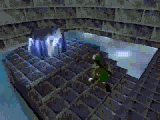
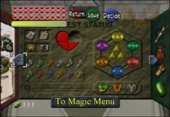
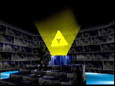

Rumors

Rumours
I remember there being this persistent intrigue with video games on the
web at this time, speculating wildly on different hidden things you could
discover inside the game, no doubt fueled by real examples like the
Konami Code. Lots
of folks would doctor fake images claiming they'd found a new easter egg,
and I guess 13 year old me felt the need to address the claims.
For this game, the big rumour was that you could find and acquire the Triforce
which would yield some unknowable power. But worry not, I'm here to look out for you.
Debunking conspiracy theories since 1999.
Ganon's Triforce Study
I, Ganon, the webmaster of this page, have committed my own
study and search for the Triforce. When I first learned of its possible presence,
of course I was very excited. Could I become a true Zelda Master? Find the Mighty Triforce?
So, I set out to discover the truth. First I will tell you of my findings proving that it does not
exist:
-Photos: I found these photos trying to prove the Triforce's existence:
This photo is very Fake:
30 Hearts???
3 heart pieces on top of that???
Yellow Magic???
To Magic Menu???
The Medallion of Light has a happy face on it!!
The Triforce is a little off-center!!
 This photo was found later and is fake because:
This photo was found later and is fake because:
I noticed the image is flattened a bit. Signs of Editing.
The file is a BMP. Signs of Editing.
It's the same as the previous one. The guy just changed it so it
looked real.
This picture took me awhile:
All you have to see is that the Hylian sheild worn by Link has a large Tri-Force
symbol on it. That sheild only appears in the Japanese version of Zelda 64.
The American Hylian Sheild has a mini-triforce and a red bird. In the Japanese version you
have to recover the Triforce to beat the Game.
Now, let's look at the facts:
- First of all, if you watched the storyline, you'll notice that the Triforce is SPLIT IN THREE!!!!!
Ganondorf has one, Zelda has one, and Link has one!!! You can't just get them all again!!!
- Second, all that shit about Dark Link at your house, Dark Link is DEAD. You killed him, remember???
- Third, I believe that the spot on the menu is not for holding the Triforce! It's decoration! If you go
into the Temple of Time, where the sword goes, you'll see a triforce symbol, surrounded by the six medallions!
It's just a symbol!
- One last thing. I found this site (its now closed) that had its own
study. The guy who wrote it had a contact inside Nintendo and was leaking information to him. First info that
came out was of the Triforce being real and everything. But, as the study went on, a certain day came and Nintendo admitted
that the info was fake and it was all a mole hunt to see who was leaking the information. There is no Triforce in the American version of Legend of Zelda: Ocarina of Time.
Sadly enough, and I hate to say it but its just not real.
Other Rumors
Now, Even though I think the Triforce does not exist, I still would appreciate your rumors about it and anything else.
Please feel free to send them in because I would like to read them and so would the rest of the beleivers. Go to E-Mail.